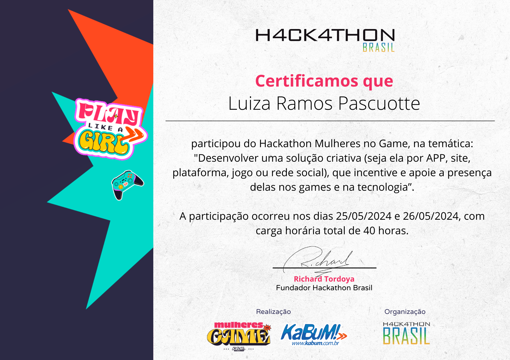
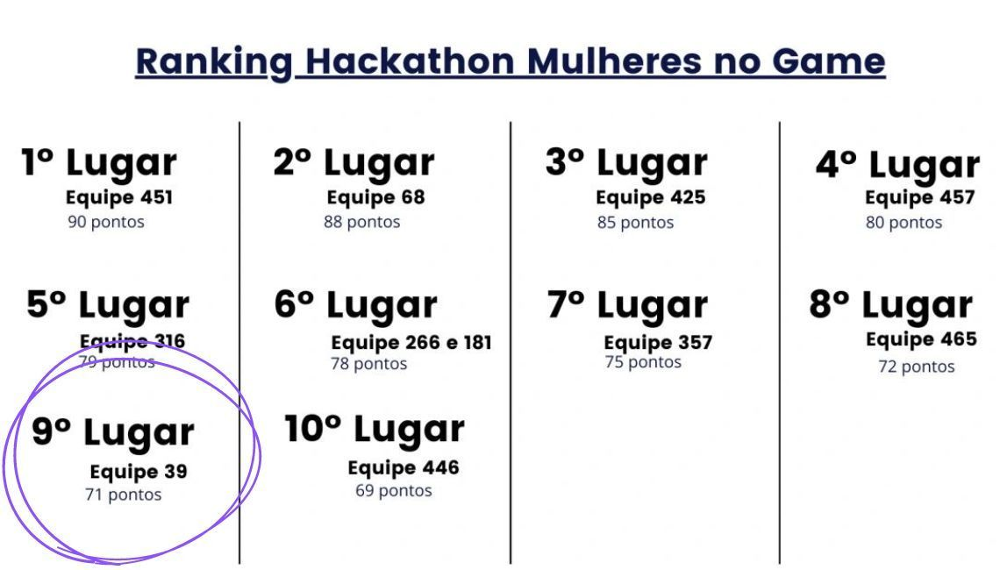

Data de Nascimento: 01/04/2002
Email: luizaramospascuotte@gmail.com
Endereço: Rua XV de Novembro, 1329, Vila Joest, Leme-SP
LinkedIn: Luiza Ramos Pascuotte
Desenvolvimento de Software Multiplataforma - Fatec Araras (2022 - 2024)
Desenvolvendo uma solução criativa que incentiva e apoia a presença das mulheres nos games e na tecnologia.
Entregamos 33 projetos de 35 equipes e ficamos em 9º lugar (equipe 39). 🎉✨
 